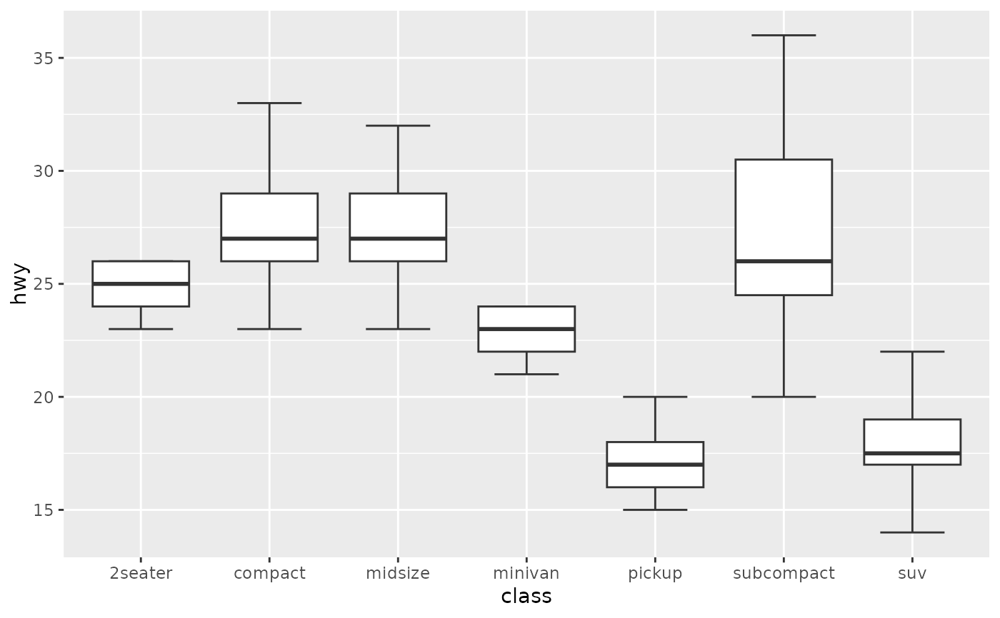
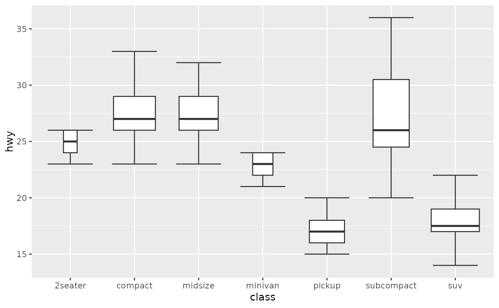
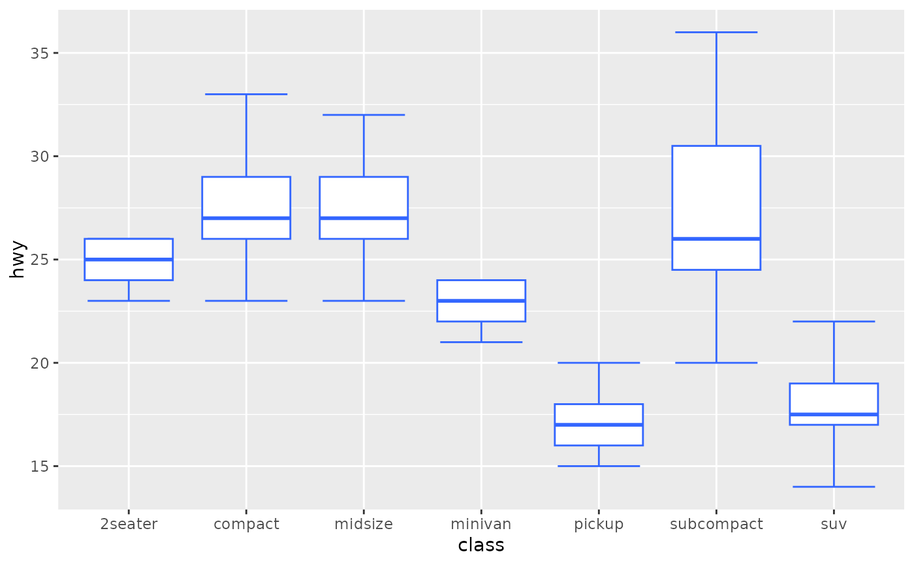
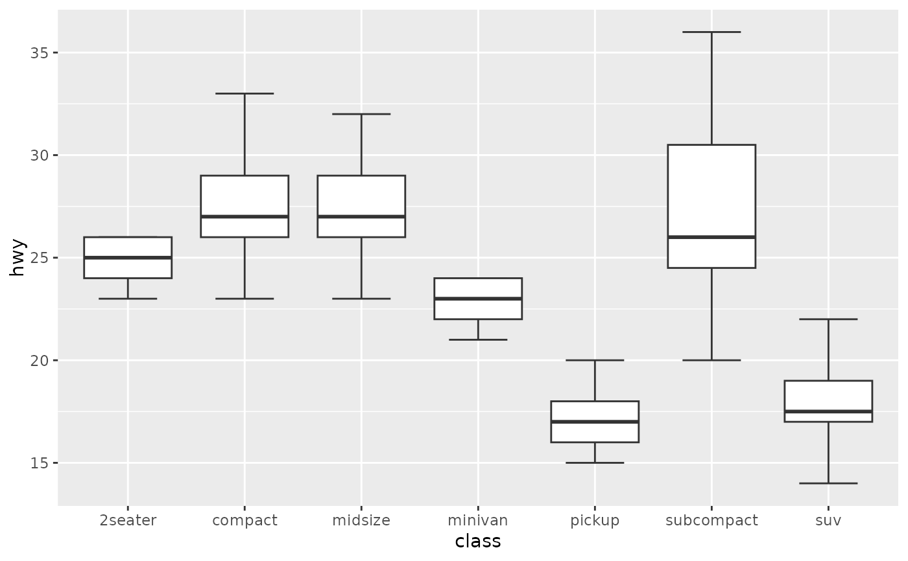
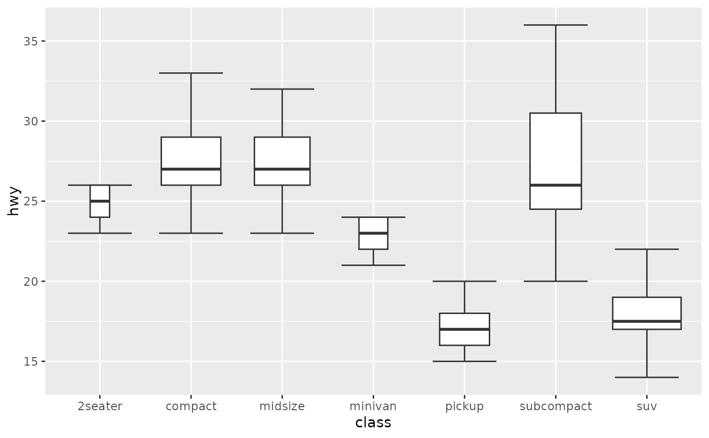
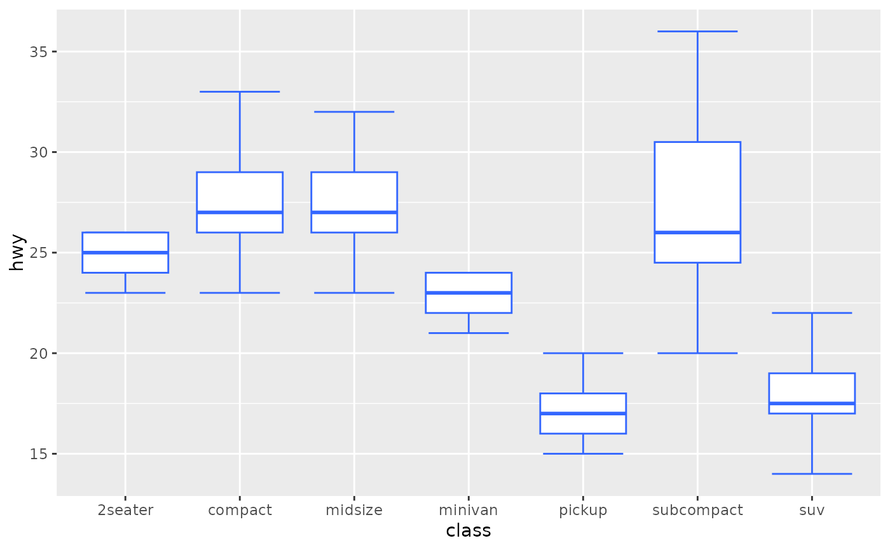
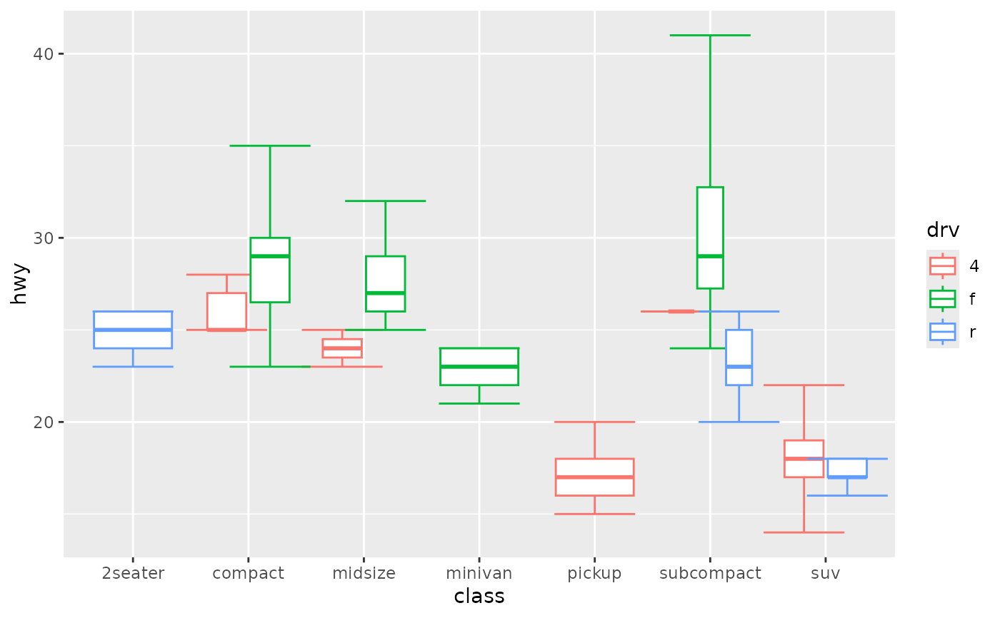
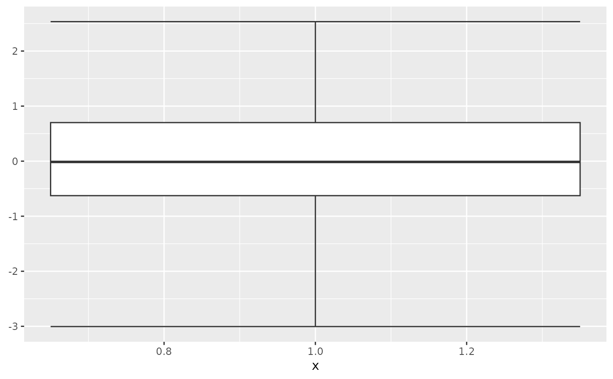
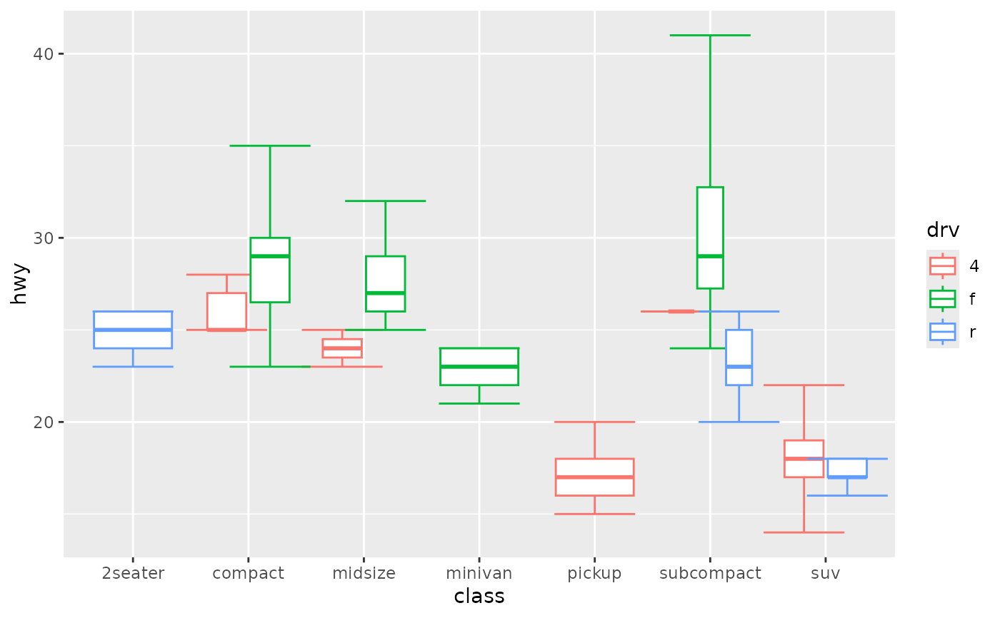
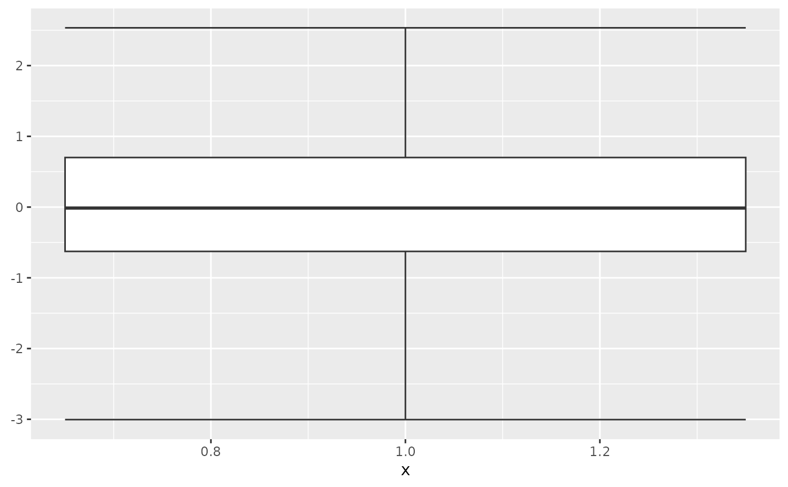

A box and whiskers plot (in the style of Tukey)
geom_boxplot2.RdThe boxplot compactly displays the distribution of a continuous variable. It visualises five summary statistics (the median, two hinges and two whiskers), and all "outlying" points individually.
geom_boxplot2(
mapping = NULL,
data = NULL,
stat = "boxplot",
position = "dodge2",
...,
outlier.colour = NULL,
outlier.color = NULL,
outlier.fill = NULL,
outlier.shape = 19,
outlier.size = 1.5,
outlier.stroke = 0.5,
outlier.alpha = NULL,
show.errorbar = TRUE,
width.errorbar = 0.7,
notch = FALSE,
notchwidth = 0.5,
varwidth = FALSE,
na.rm = FALSE,
show.legend = NA,
inherit.aes = TRUE
)Arguments
- mapping
Set of aesthetic mappings created by
aes(). If specified andinherit.aes = TRUE(the default), it is combined with the default mapping at the top level of the plot. You must supplymappingif there is no plot mapping.- data
The data to be displayed in this layer. There are three options:
If
NULL, the default, the data is inherited from the plot data as specified in the call toggplot().A
data.frame, or other object, will override the plot data. All objects will be fortified to produce a data frame. Seefortify()for which variables will be created.A
functionwill be called with a single argument, the plot data. The return value must be adata.frame, and will be used as the layer data. Afunctioncan be created from aformula(e.g.~ head(.x, 10)).- position
Position adjustment, either as a string naming the adjustment (e.g.
"jitter"to useposition_jitter), or the result of a call to a position adjustment function. Use the latter if you need to change the settings of the adjustment.- ...
Other arguments passed on to
layer(). These are often aesthetics, used to set an aesthetic to a fixed value, likecolour = "red"orsize = 3. They may also be parameters to the paired geom/stat.- outlier.colour, outlier.color, outlier.fill, outlier.shape, outlier.size, outlier.stroke, outlier.alpha
Default aesthetics for outliers. Set to
NULLto inherit from the aesthetics used for the box.In the unlikely event you specify both US and UK spellings of colour, the US spelling will take precedence.
Sometimes it can be useful to hide the outliers, for example when overlaying the raw data points on top of the boxplot. Hiding the outliers can be achieved by setting
outlier.shape = NA. Importantly, this does not remove the outliers, it only hides them, so the range calculated for the y-axis will be the same with outliers shown and outliers hidden.- width.errorbar
the width of errorbar (default 0.7)
- notch
If
FALSE(default) make a standard box plot. IfTRUE, make a notched box plot. Notches are used to compare groups; if the notches of two boxes do not overlap, this suggests that the medians are significantly different.- notchwidth
For a notched box plot, width of the notch relative to the body (defaults to
notchwidth = 0.5).- varwidth
If
FALSE(default) make a standard box plot. IfTRUE, boxes are drawn with widths proportional to the square-roots of the number of observations in the groups (possibly weighted, using theweightaesthetic).- na.rm
If
FALSE, the default, missing values are removed with a warning. IfTRUE, missing values are silently removed.- show.legend
logical. Should this layer be included in the legends?
NA, the default, includes if any aesthetics are mapped.FALSEnever includes, andTRUEalways includes. It can also be a named logical vector to finely select the aesthetics to display.- inherit.aes
If
FALSE, overrides the default aesthetics, rather than combining with them. This is most useful for helper functions that define both data and aesthetics and shouldn't inherit behaviour from the default plot specification, e.g.borders().
Aesthetics
geom_boxplot() understands the following aesthetics (required aesthetics are in bold):
xorylowerorxlowerupperorxuppermiddleorxmiddleyminorxminymaxorxmaxalphacolourfillgrouplinetypelinewidthshapesizeweight
Learn more about setting these aesthetics in vignette("ggplot2-specs").
Summary statistics
The lower and upper hinges correspond to the first and third quartiles
(the 25th and 75th percentiles). This differs slightly from the method used
by the boxplot() function, and may be apparent with small samples.
See boxplot.stats() for more information on how hinge
positions are calculated for boxplot().
The upper whisker extends from the hinge to the largest value no further than 1.5 * IQR from the hinge (where IQR is the inter-quartile range, or distance between the first and third quartiles). The lower whisker extends from the hinge to the smallest value at most 1.5 * IQR of the hinge. Data beyond the end of the whiskers are called "outlying" points and are plotted individually.
In a notched box plot, the notches extend 1.58 * IQR / sqrt(n).
This gives a roughly 95% confidence interval for comparing medians.
See McGill et al. (1978) for more details.
References
McGill, R., Tukey, J. W. and Larsen, W. A. (1978) Variations of box plots. The American Statistician 32, 12-16.
See also
geom_quantile() for continuous x,
geom_violin() for a richer display of the distribution, and
geom_jitter() for a useful technique for small data.
Examples
library(ggplot2)
p <- ggplot(mpg, aes(class, hwy))
p + geom_boxplot2()
 p + geom_boxplot2(width.errorbar = 0.5)

p + geom_boxplot2(width = 0.5)
# Orientation follows the discrete axis
# ggplot(mpg, aes(hwy, class)) + geom_boxplot2()
p + geom_boxplot2(notch = TRUE)
#> Notch went outside hinges
#> ℹ Do you want `notch = FALSE`?
#> Notch went outside hinges
#> ℹ Do you want `notch = FALSE`?
p + geom_boxplot2(varwidth = TRUE)

p + geom_boxplot2(fill = "white", colour = "#3366FF")

# By default, outlier points match the colour of the box. Use
# outlier.colour to override
p + geom_boxplot2(outlier.colour = "red", outlier.shape = 1)
p + geom_boxplot2(width.errorbar = 0.5)

p + geom_boxplot2(width = 0.5)
# Orientation follows the discrete axis
# ggplot(mpg, aes(hwy, class)) + geom_boxplot2()
p + geom_boxplot2(notch = TRUE)
#> Notch went outside hinges
#> ℹ Do you want `notch = FALSE`?
#> Notch went outside hinges
#> ℹ Do you want `notch = FALSE`?
p + geom_boxplot2(varwidth = TRUE)

p + geom_boxplot2(fill = "white", colour = "#3366FF")

# By default, outlier points match the colour of the box. Use
# outlier.colour to override
p + geom_boxplot2(outlier.colour = "red", outlier.shape = 1)
 # Remove outliers when overlaying boxplot with original data points
p + geom_boxplot2(outlier.shape = NA) + geom_jitter(width = 0.2)
# Remove outliers when overlaying boxplot with original data points
p + geom_boxplot2(outlier.shape = NA) + geom_jitter(width = 0.2)
 # Boxplots are automatically dodged when any aesthetic is a factor
p + geom_boxplot2(aes(colour = drv))

# You can also use boxplots with continuous x, as long as you supply
# a grouping variable. cut_width is particularly useful
# ggplot(diamonds, aes(carat, price)) +
# geom_boxplot2()
# ggplot(diamonds, aes(carat, price)) +
# geom_boxplot2(aes(group = cut_width(carat, 0.25)))
# Adjust the transparency of outliers using outlier.alpha
# ggplot(diamonds, aes(carat, price)) +
# geom_boxplot2(aes(group = cut_width(carat, 0.25)), outlier.alpha = 0.1)
# It's possible to draw a boxplot with your own computations if you
# use stat = "identity":
y <- rnorm(100)
df <- data.frame(
x = 1,
y0 = min(y),
y25 = quantile(y, 0.25),
y50 = median(y),
y75 = quantile(y, 0.75),
y100 = max(y)
)
ggplot(df, aes(x)) +
geom_boxplot2(
aes(ymin = y0, lower = y25, middle = y50, upper = y75, ymax = y100),
stat = "identity"
)

# Boxplots are automatically dodged when any aesthetic is a factor
p + geom_boxplot2(aes(colour = drv))

# You can also use boxplots with continuous x, as long as you supply
# a grouping variable. cut_width is particularly useful
# ggplot(diamonds, aes(carat, price)) +
# geom_boxplot2()
# ggplot(diamonds, aes(carat, price)) +
# geom_boxplot2(aes(group = cut_width(carat, 0.25)))
# Adjust the transparency of outliers using outlier.alpha
# ggplot(diamonds, aes(carat, price)) +
# geom_boxplot2(aes(group = cut_width(carat, 0.25)), outlier.alpha = 0.1)
# It's possible to draw a boxplot with your own computations if you
# use stat = "identity":
y <- rnorm(100)
df <- data.frame(
x = 1,
y0 = min(y),
y25 = quantile(y, 0.25),
y50 = median(y),
y75 = quantile(y, 0.75),
y100 = max(y)
)
ggplot(df, aes(x)) +
geom_boxplot2(
aes(ymin = y0, lower = y25, middle = y50, upper = y75, ymax = y100),
stat = "identity"
)
